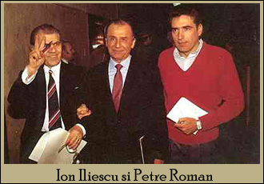

|
||
VI. Revenirea la statul de drept. Pluralism politicPlatforma-program a FSN, din seara de 22 decembrie 1989, anunţa revenirea la pluralismul politic. Au apărut numeroase  asociaţii şi organizaţii şi au fost activate partidele istorice, desfiinţate de comunişti în 1947: Partidul Naţional Ţărănesc, Partidul Naţional Liberal, Partidul Social-Democrat. Lor li se adaugă UDMR (Uniunea Democrată a Maghiarilor din România) şi Vatra Românească, înfiinţată de românii din Transilvania. FSN, transformat în partid politic, a câstigat primele alegeri libere din mai 1990. Constituţia din 1991, aprobată prin referendum naţional, proclama România stat de drept, democratic şi social, considera pluralismul politic o garanţie a democraţiei şi garanta cetăţenilor drepturi civile. Statul este constituit pe principiul separării puterilor: legislativul, compus din Camera Deputaţilor şi Senat, este ales prin vot universal, direct, egal, secret, ca şi preşedintele, ales pe patru ani (ulterior, în urma revizuirii Constituţiei în 2003 mandatul s-a prelungit la 5 ani). Guvernul, format prin negocieri cu forţele politice, este aprobat de Parlament. Se precizează independenţa organelor puterii judecătoreşti şi se garantează egalitate în drepturi şi îndatoriri a tuturor cetăţenilor. Dicţionar
pluralism politic = ordine politică în care existanţa mai multor partide politice permite cetăţenilor să-şi exprime opinii şi interese diferite într-o confruntare liberă |
||